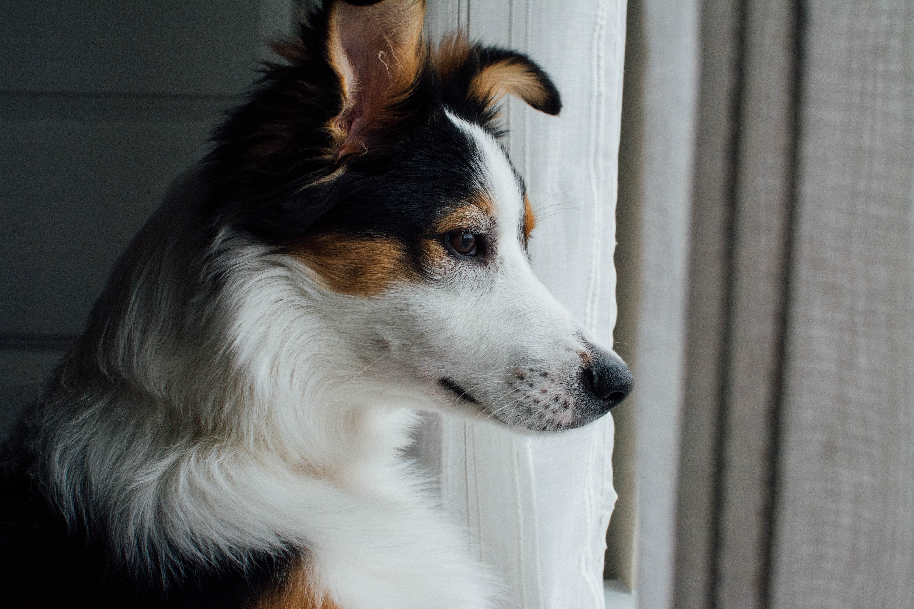

Porqué adoptar, cómo ayudar
Consideramos que nuestros amados animales cuentan con infinidad de superpoderes que los hacen especiales y que nos colman de motivos para quererlos con tanta intensidad. Si hicieras una lista mental de sus virtudes, no dejarás de sorprenderte de lo maravillosa que puede ser su compañía.
¿Sabías que tu mascota es ..?
... el único ser que te va a esperar toda la vida.
- Las mascotas colman de juego y alegría al hogar.
- Las mascotas ayudan a los niños en su desarrollo como personas.
- Las mascotas son una valiosa companía para los adultos mayores.
- Las mascotas demuestran extrema lealtad con sus dueños y hasta perciben sus estados de ánimo.
- Dar amor a un animal, nos convierte en personas más nobles y empáticas.